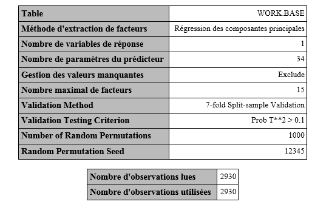
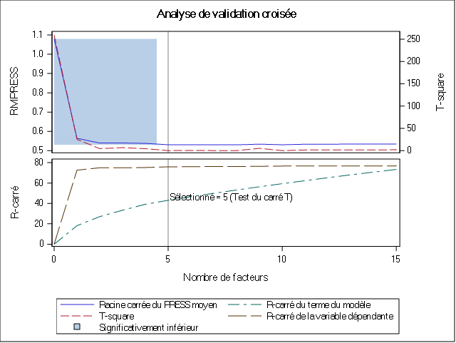
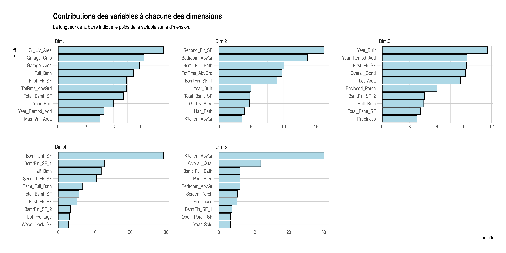
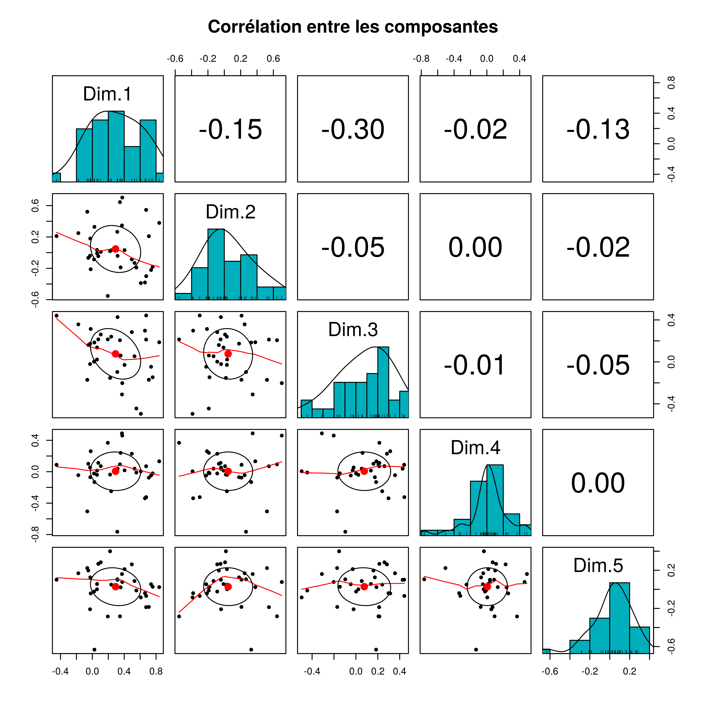

5 Le principe de la méthode de la régression sur les composantes principales
Dans le cadre d’une régression multiple, nous cherchons à expliquer l’endogène y à l’aide de variables explicatives X. Nous cherchons donc \[y = \alpha + \beta . X\]
La régression sur les composantes principales consiste à remplacer la matrice des \(X\) (n lignes et m colonnes) par une nouvelle matrice \(T\) dérivée de \(X\), de n lignes et k colonnes, avec k très inférieur à m.
Chaque colonne k doit être une combinaison linéaire des variables d’origine.
\[T= X.W\]
Avec \(W\) la matrice (m,k) des coefficients définissant les combinaisons linéaires, T une matrice dont les colonnes forment des variables « artificielles » obtenues par combinaison linéaire des variables d’origine.
Une régression multiple est ensuite appliquée avec \(T\) à la place de \(X\) : \[y = c + d.T\]
Il faut donc déterminer \(W\) de manière à avoir une matrice de variables explicatives T plus adaptée au calcul de la régression que la matrice X d’origine.
Deux méthodes pour construire \(T\) (et donc \(W\)) : RCP et RPLS
5.1 Régression sur composantes principales (RCP ou PCR)
ACP puis régression multiple. L’ACP nécessite des variables quantitatives. A partir des variables \(X\) centrées, l’ACP normée donne la matrice T dont les colonnes sont les composantes principales.
Elles sont orthogonales entre elles (plus de problème de colinéarité). La matrice \(W\) est la matrice des coefficients des combinaisons linéaires (coordonnées sur les composantes principales).
Pour cette méthode, nous allons utiliser conjointement SAS et R afin de ressortir le maximum d’informations utiles à l’interprétation des résultats.
5.2 Résultats d’estimations avec SAS
Nous avons spécifié la méthode “PCR” dans la procédure PLS afin de réaliser une régression sur les composantes principales. Il y a en total 34 variables explicatives pour 2930 observations.
Nous choisissons également de faire une validation croisée sur le jeu de données.


Pour pouvoir déterminer avec confiance le nombre de composantes principales (ou facteurs) à retenir dans la PCR, l’algorithme utilise une technique de validation croisée. Une technique de validation croisée consiste à diviser l’échantillon en plusieurs groupes sur lesquels des ajustements successifs sont effectués. L’ajustement du modèle est effectué sur le groupe d’apprentissage et les résultats sont comparés aux observations du groupe test. L’efficacité prédictive est évaluée à l’aide l’indicateur PRESS (Predicted REsidual Sum of Squares).
Le tableau suivant nous montre que la valeur minimale de la validation croisée est atteinte si le nombre de composantes principales est 8. Toutefois il est préférable de se fier au test qui indique si oui ou non il existe une différence significative entre les 8 composantes.
Le test nous indique qu’à partir de la 4e composante il n’existe plus de différences significatives entre les composantes. Nous allons donc retenir 5 composantes pour la suite de l’analyse.

Il convient maintenant d’interpréter les résultats du modèle construit.
Le tableau suivant affiche la variation de pourcentage expliquée par composantes principales.

Le tableau affiche deux catégories de résultats : la variation de pourcentage expliquée par composantes principales sur les effets du modèle (les variables explicatives) et la variation de pourcentage expliquée de la variable dépendante pour chaque facteur (ou composante) ajouté.
Nous voyons donc que pour les 5 composantes retenues, la régression sur les composantes principales explique 75.93% de la variable dépendante et environ 43% des variables explicatives.
Cela signifie que les 5 composantes retenues qui arrivent à expliquer 43% de la variance des variables explicatives sont capables d’expliquer 75.93% de la variance des prix.
Les résultats de SAS ne nous donnent pas les coefficients associés à chaque composante. Nous pouvons donc les estimer avec R en utilisant le même nombre de composantes que la validation croisée avec SAS a indiqué.
pc2 <- FactoMineR::PCA(subset(base_export,
select = -c(Sale_Price)),
graph = FALSE)
coord_pc <- data.frame(pc2$ind$coord)
coord_pc$Sale_Price <- ames$Sale_Price
mod_pc <- lm(Sale_Price~., data = coord_pc)
summary(mod_pc)
Call:
lm(formula = Sale_Price ~ ., data = coord_pc)
Residuals:
Min 1Q Median 3Q Max
-535355 -20542 -3320 17245 304779
Coefficients:
Estimate Std. Error t value Pr(>|t|)
(Intercept) 180796.06 724.62 249.5033 < 2.2e-16 ***
Dim.1 27395.65 291.64 93.9374 < 2.2e-16 ***
Dim.2 -7046.03 415.69 -16.9502 < 2.2e-16 ***
Dim.3 478.57 497.63 0.9617 0.3363
Dim.4 2778.86 513.24 5.4144 0.00000006649 ***
Dim.5 5769.77 628.86 9.1750 < 2.2e-16 ***
---
Signif. codes: 0 '***' 0.001 '**' 0.01 '*' 0.05 '.' 0.1 ' ' 1
Residual standard error: 39224 on 2924 degrees of freedom
Multiple R-squared: 0.75934, Adjusted R-squared: 0.75893
F-statistic: 1845.2 on 5 and 2924 DF, p-value: < 2.22e-16Les résultats globaux du modèle que nous trouvons sont les mêmes avec R. Les 5 composantes retenues expliquent bien 75,93% de la variance des prix de vente de la maison.
Nous pouvons écrire ce résultat sous forme d’une équation :
\[SalePrice = 1800796.06 + 27395.65 * Dim1 - 7046.03 * Dim2 + 478.57 * Dim3 + 2778.86* Dim4 + 5769.77* Dim5 \]
Tous les coefficients sont positifs, à l’exception du coefficient de la dimension 2.
Le coefficient de la dimension 3 est le plus faible et est non significatif (p-value > 5%).
Pour pouvoir interpréter les coefficients, il importe de savoir ce que mesure chaque composante. A l’aide de R nous pouvons, comme nous l’avons fait dans la section 2.3, afficher ce que mesure chaque composante en affichant les 10 premières contributions à chaque composante.
Nous décidons de représenter ces composantes sur un graphique.
retrieve_dims_contrib <- function(pca.obj, dim = 1, keep = 10){
dims = paste0("Dim.", dim)
comp.df <- data.frame(pca.obj$var$contrib)
idx <- order(comp.df[dims], decreasing = TRUE)
display = head(comp.df[idx,][dims], keep)
display$dim <- dims
display <- rownames_to_column(display, "variable")
colnames(display) = c("variable", "contrib", "dim")
return(display)
}Les contributions des variables aux différents axes factoriels sont :
df <- retrieve_dims_contrib(pc, dim = 1)
for (i in 2:5) df <- rbind(df, retrieve_dims_contrib(pc, i))df %>% mutate(variable = tidytext::reorder_within(variable, contrib, dim)) %>%
ggplot(aes(variable, contrib)) +
geom_col( col = "black", fill = "lightblue") + coord_flip() +
facet_wrap(~dim, scales = "free", nrow = 2) +
tidytext::scale_x_reordered() +
labs(title = "Contributions des variables à chacune des dimensions",
subtitle = "La longueur de la barre indique le poids de la variable sur la dimension.") +
theme_ipsum() + theme(
plot.title = element_text(size = 30),
plot.subtitle = element_text(size = 20)
)
Le poids des variables sur les trois premières dimensions est assez équilibré avec des amplitudes modérées (0 à 12). Les deux dernières dimensions sont chacune fortement dominées par une variable avec des amplitudes beaucoup plus grande (0 à 30).
Les variables synthétiques que produit l’ACP sont orthogonales entre elles. Pour le vérifier nous pouvons représenter les corrélations entre les dimensions.
data.frame(pc$var$coord) %>%
psych::pairs.panels(
method = "pearson", # correlation method
hist.col = "#00AFBB",
density = TRUE, # show density plots
ellipses = TRUE, # show correlation ellipses
main = "Corrélation entre les composantes"
)
Nous voyons bien que les corrélations entre les composantes sont faibles. La plus haute en valeur absolue est 0.30 et représente la corrélation entre la dimension 1 et la dimension 3.
5.2.1 Dimension 1
La dimension 1 fait référence à la superficie de la maison, que ce soit la taille de la résidence et des pièces qui composent la maison. Cette composante est également dans une certaine mesure influencée par l’âge de la maison (l’année où la maison a été construite et l’année où elle a été rénovée.)
5.2.2 Dimension 2
La deuxième dimension se réfère aux caractéristiques des maisons telles que la superficie du deuxième étage, et le nombres de pièces (salles de bain, chambres, cuisines) se trouvant au deuxième étage. Cette composante détermine donc le prestige de la maison.
5.2.3 Dimension 3
La troisième composante mesure l’âge de la maison et la condition de la maison au moment de la vente.
5.2.4 Dimension 4
Cette composante est principalement dominée par le fait que la maison contient des parties inachevées.
5.2.5 Dimension 5
Cette composante est fortement dominée par le fait s’il y a une cuisine à l’étage et par la condition générale de la maison.
5.3 Limite de la régression sur les composantes principales
Nous venons de voir l’intérêt de la régression sur les composantes principales. Nous avons vu notamment que les composantes issues de l’ACP sont orthogonales en ce sens qu’il cette méthode permet d’obtenir des composantes orthogonales entre elles. Toutefois, l’analyse en composante principale que nous avons effectuée maximise les variances des variables \(X\) indépendamment des variations de Y : la variance de Y n’est pas maximisée. Ceci peut surestimer le poids de certaines explicatives et conduire de ce fait à de mauvaises interprétations des résultats.
Nous pouvons donc utiliser la deuxième méthode de cette famille.